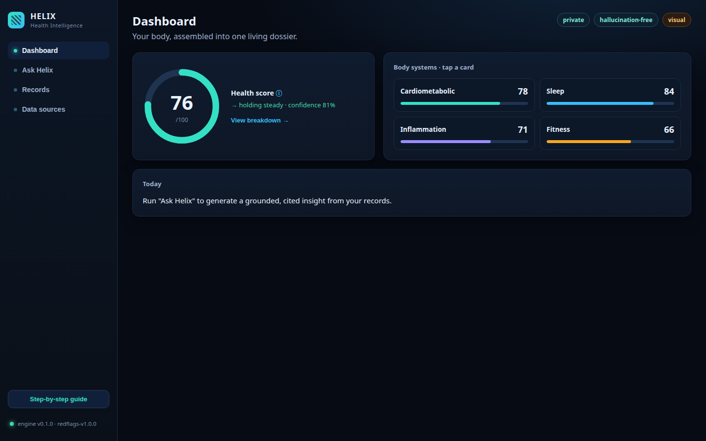

HELIX
Your entire body — every record, signal, and result — assembled into one private, local-first dossier, with a multi-agent analyst on top that answers only from your own data, with citations. Anti-hallucination by architecture, built in Rust and compiled to WebAssembly.

Grounded, never invented
Every claim resolves to a stored record with source, date, units, and a reference range. No backing datum → no claim.
It says "I don't know"
Missing or stale data triggers an honest gap notice instead of a guess — abstention is a feature.
Deterministic numbers
Trends, deltas, and range crossings are computed in Rust, not by an LLM. The math is reproducible.
Red-flag safety
Dangerous values suppress optimization and route to "see a clinician now." Screening, not diagnosis.
Your keys, your vault
The canonical corpus is encrypted with a key only you hold. The company can't read or sell it.
One engine, every surface
The console and the mobile app run the same audited Rust crates compiled to WebAssembly.